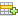
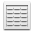

MySQL Workbench
Demo connection
✕
File
New Query Tab
Ctrl+T
Open SQL Script...
Ctrl+Shift+O
Save Script
Ctrl+S
Close Tab
Ctrl+W
Exit
Alt+F4
Edit
Undo
Ctrl+Z
Redo
Ctrl+Y
Format ► Beautify Query
Ctrl+B
View
✔ Show Sidebar (Navigator)
✔ Show Secondary Sidebar (Output)
✔ Show SQL Additions
Query
Execute (All or Selection)
Ctrl+Shift+Enter
Execute Current Statement
Ctrl+Enter
Explain Current Statement
Ctrl+Alt+X
Reconnect to Server
Database
Connect to Database...
Ctrl+U
Reverse Engineer...
Ctrl+R
Server
Server Status
Client Connections
Users and Privileges
Data Export
Data Import
Tools
Configuration
Utilities
Scripting
Scripting Shell...
New Script
Help
Help Index
F1
About Workbench
⋮
SQL File 2*
✕
+
Limit to 1000 rows
Limit to 500 rows
Limit to 100 rows
Don't Limit
¶
Result Grid
Filter Rows:
Edit:

Export/Import:
Wrap Cell Content
#

Result Grid
Form Editor
Field Types
Query Stats
Execution Plan
::::::::::::
Output
::::::::::::::::::::::::::::::::::::::::::::::::::::::::::::::::::::::::
Action Output
Text Output
History Output
#
Time
Action
Message
Duration / Fetch